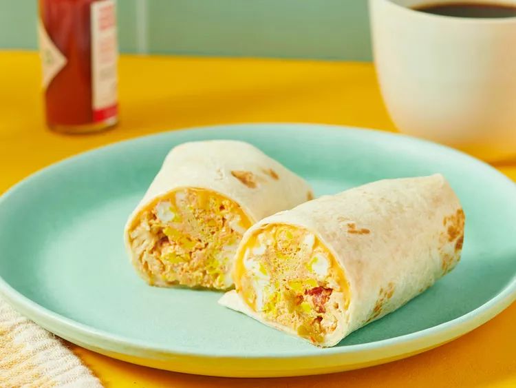

back to recipes
Breakfast Burritos

Breakfast burritos are delicious.
This is a quick and microwave-friendly breakfast burrito recipe. No need to pretend that we are chef-ing it up.
Ingredients needed
- 2 large eggs
- 2 tablespoons salsa
- 1 slice American cheese
- 1 tortilla
Directions
- Gather all ingredients
- Spray a cereal bowl with nonstick cooking spray. Crack the eggs into the bowl, add the salsa, and stir.
- Microwave on high for 1 minute, stir, and cook for another minute or until the mixture firms up.
- Place cheese in center of tortilla and top with egg mixture.
- Wrap it all up like a burrito and head for the car!